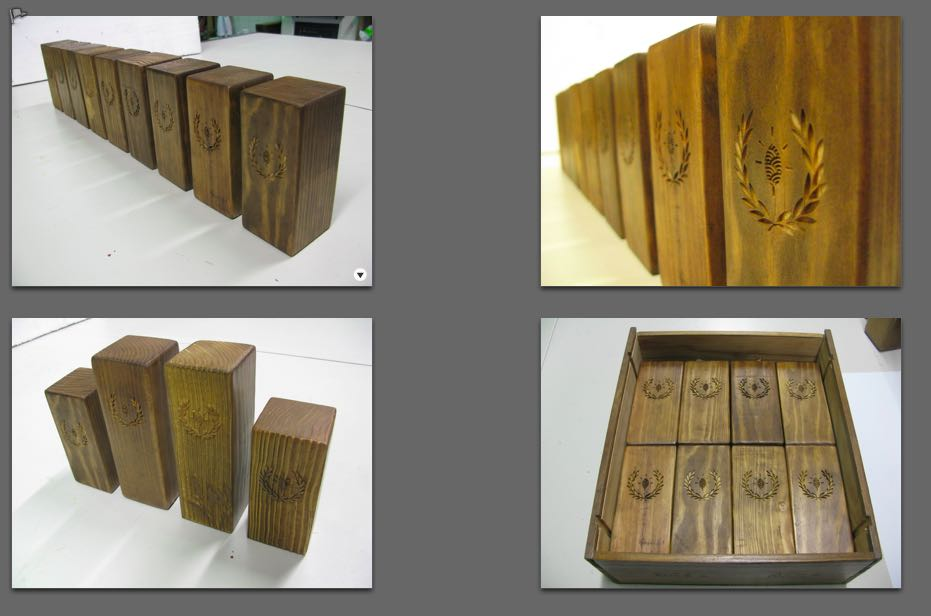
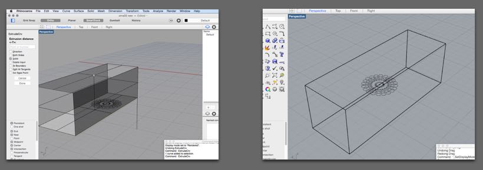
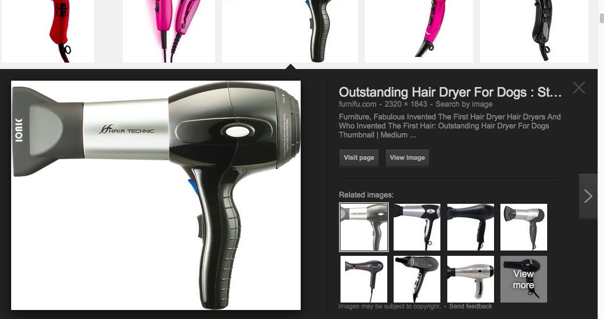
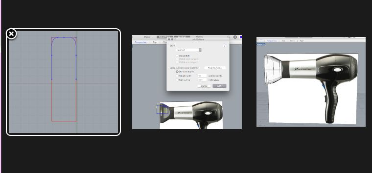

Since I've been working with 2D drawing software for the past year, this week was essencially about learning how to model in 3D.
After some discussion in the lab, I decided to try out Rhinoceros. I was tempted by Blender at first, as it is powerful and open-source, but I was worried about its steeper learning curve. I also looked at Zbrush a bit, but I didn't use it as mesh modeling is not the best tool for making precise objects. It looked pretty cool though, I hope I can play with it sometime in the future.
Since I am a mac user, I was a bit weary of Rhino at first -- as it is still in beta mode and missing some features. It did crash a couple of times and sometimes the commands don't respond straight away, but considering it is a free version, I now think it works pretty well overall.
One of the things I liked about Rhino was that it operates through a command line. Although there are many icons for the most common commands, I found that writing them out was straightforward and quite intuitive; Rhino "talks" to you throughout each command, so you always know what you need to do next to finalize it.
My first test was to model a wooden trophy I was working on. As I had been comissioned last week to produce 10 trophies for a French prize on climate change, I had spent some of my time this week making them. So I figured I might as well use it as a simple object to start getting used to the Rhino commands.
This was mostly an exercise to experiment with creating lines, curves, surfaces and solids and to gain some agility with the different viewframes, the gumball, orbiting, panning, trimming, adding fillets, making boolean operations.
I also started to fiddle with the four commands that turn curves and surfaces into 3D objects: Extrusion, loft, sweep and revolve
Since the trophy was complex enough to complete the assignment, it was now time to pick another object to model. I decided not to start modelling my final project idea (a hydroponic gardening system) as I'm not yet sure what shape it will be taking. Instead, I chose the worthy endeavour of modeling "The Outstanding Hairdryer for Dogs".
The process was relatively painless, but there are few things that still need getting used to. Some of my "notes to self", as I continue modeling in Rhino:
- remember to select curves through rectangular selection, so I also select the points I don't see in my 2D view frame. Always use the gumball
- remember to move, scale and rotate with the gumball, so I dont lose my object "somewhere around the world"
- remember commands like Project, History and C-Pane as you model, they are handy features that can save you a lot of pain when modeling in 3D
- keep checking what you are doing in the perspective view, or you'll end up messing things up
Here are the 3D files:
The Outstanding Dog Hairdryer